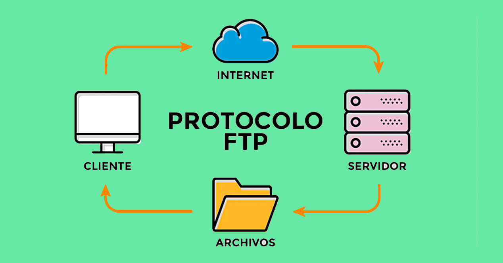

El Protocolo de transferencia de archivos ( File Transfer Protocol o FTP) es un protocolo
de red para la transferencia de archivos entre sistemas conectados a una
red TCP (Transmission Control Protocol), basado en la arquitectura cliente-servidor.
Desde un equipo cliente se puede conectar a un servidor para descargar archivos desde
él o para enviarle archivos, independientemente del sistema operativo que se esté
utilizado en cada equipo.
El FTP se basa en el modelo cliente/servidor y permite la transferencia de ficheros
tanto del servidor al cliente, como del cliente al servidor. Asimismo, permite que un
cliente efectúe transferencias directas de un servidor a otro, con lo que se ahorra la
necesidad de copiar los ficheros del primer servidor al cliente y pasarlos después
del cliente al segundo servidor. El protocolo proporciona también operaciones para
que el cliente pueda manipular el sistema de ficheros del servidor: borrar ficheros o
cambiarles el nombre, crear y borrar directorios, listar sus contenidos, etc.
